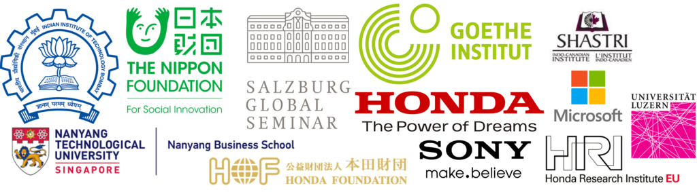

satyam mohla
सत्यम मोहला
サティヤン モーラ
Honda Research Institute Europe
Innovation Program Manager
 Frankfurt, Germany
Frankfurt, Germany
 Google Scholar
Google Scholar
 lamao.@hagmmscytoamil
unscramble
lamao.@hagmmscytoamil
unscramble
Hi! I am busy imagining a new digital future by creating new products, services, and business models around Digital Mobility & Energy Systems of tomorrow, at Honda Research Institute EU Germany. I was earlier based in Digital, Design & Strategy Divisions at Honda Innovation Lab Tokyo. My work focusses on deeptech innovation, venture creation & new service design.
I graduated with a Bachelors & Masters in Electrical Engineering and a minor in Industrial Engineering & Operations Research from IIT Bombay, India. My master's thesis in Artificial Intelligence was advised by Biplab Banerjee and Subhasis Chaudhari. In the past, I also developed low-cost diagnostic devices, leading to a few publications, patents and awards. I have also worked as a researcher at Sony R&D Tokyo, AI IMPACT Lab, AI Policy Lab, VIP Lab & NanoBios Lab. I also spent a few months at Nanyang Business School and NTU Singapore as a Temasek TfLEaRN Scholar.
My current research interests revolve around AI Policy, AI Geostrategy, AI Ethics, AI for Impact, AI, & Computational Aesthetics. Please click here to view a list of my peer-reviewed publications.
If you are looking for the hardware computer scientist, that would be my brother Sidharth at Nvidia.
